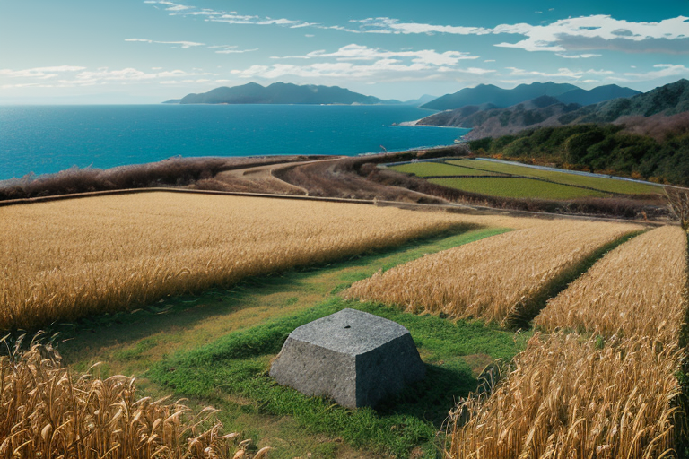
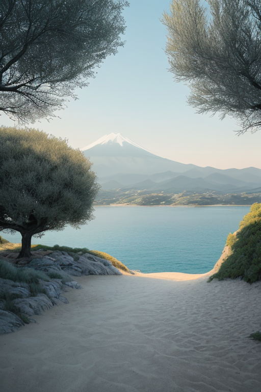
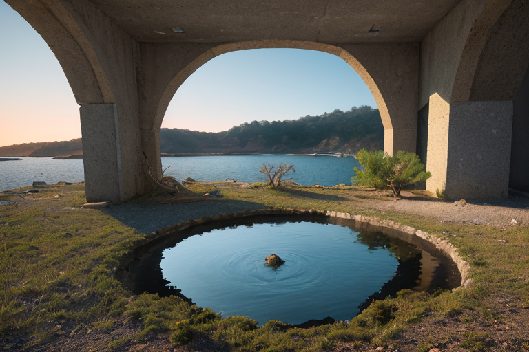
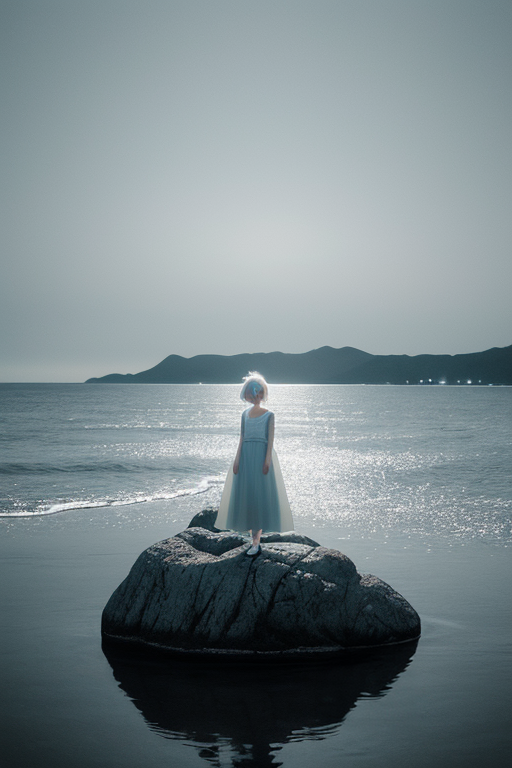
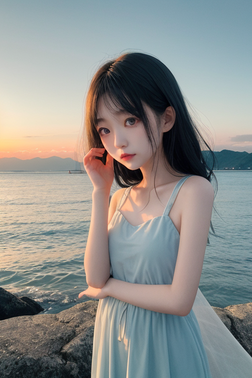

第一章 現実の香川
あなたはまだ気づいていない。この土地にも、王がいることを。
空海が生まれたとされる善通寺市の周辺は、今も静かな田園が広がる。歴史の転換点は、特別な光に包まれた場所ではなく、ごく普通の畑の脇に、ひっそりと碑を残すだけだ。ここ香川では、多くのものがそうである。讃岐うどんは、小麦と塩と水、そして技という、必要最小限の要素から生まれる。小豆島の醤油蔵も、直島の現代アートも、存在そのものが「余分なもの」への問いを投げかける。
この土地の地質は複雑で、無数の小さな断層が瀬戸内の海に沈み、時に歪みを蓄える。王、カガワリア・ミニマは、その歪みが大きくなる前に、必要最小限の調整を加える。感情を持たない彼にとって、この作業は計算通りだ。多すぎるエネルギーを削ぎ落とし、一点に集中する。かつて空海が唐に渡り、膨大な知識を「必要なるもの」だけに凝縮して持ち帰ったように。彼の手にかかれば、地震の波は、ほんの少し、無駄な広がりを失う。

第二章 歪みの兆候
直島の海岸に、一つの波が寄せた。それは、瀬戸大橋の巨大な構造物が地盤に加える絶え間ない圧力の、ごく一部の解放だった。カガワリア・ミニマは、波が打ち寄せる砂浜に立つ。彼の目には、地中を伝わるエネルギーの「無駄な広がり」が、青白い線として映る。不要な振動を削ぎ落とす作業は、讃岐うどんの生地から余分な水分と空気を抜く練りの工程に似ていた。必要最小限の力で、生地は締まり、コシが生まれる。
彼の傍らで、妖精ミニエルが静かに報告する。「瀬戸内国際芸術祭。多くの人と物資が島々を往来します。これが新たな歪みの共振を生み出しかねません」。人々の熱狂や移動そのものが、地質の静かなバランスを微かに揺さぶる。ミニマは頷く。芸術もまた、余剰を削ぎ落とし、本質を抽出する行為だ。しかし、その過程そのものが、時に「多さ」を生む。彼は問うた。少なさこそがこの土地の豊かさの基盤ではなかったか。オリーブの樹が少ない水と土で実を結び、和三盆が余分な雑味を省いて甘みを凝縮するように。歪みは、豊かさの定義が揺らぐ時にも、静かに蓄積され始める。

第三章 王の葛藤
直島の海岸に、新たな展示物の基礎杭が打ち込まれる音が響いた。芸術祭の拡大は、島の静寂を侵食しつつあった。ミニマは、父母ヶ浜の鏡のような水面に映る夕陽を見つめながら計算を続ける。観光客の増加は経済的な「豊かさ」をもたらすが、それに伴うエネルギー消費、廃棄物、地盤への負荷は確実な「多さ」だった。彼の王国の原理は「簡素」、すなわち必要最小限による調和である。
「止めるべきでしょうか」とミニエルが囁く。ミニマは首を振った。彼の役割は変革そのものを止めることではない。無駄な波を削ぎ、本質を見失わないよう微調整することだ。彼は、打ち込まれる杭の振動が地中に伝わる歪みを、ほんの少し吸収し分散させた。津波が来るなら、その速度を一秒遅らせる。混雑が起きるなら、人の流れに小さな隙間を作る。
しかし、彼の内側に初めて、淡い逡巡が生まれた。この「多さ」の奔流は、この土地が長年育んできた「少なさによる豊かさ」を、ゆっくりと蝕んでいくのではないか。王は感情を持たないはずだった。それなのに、オリーブの樹が塩風に耐えるように、彼の回路に「心配」という名の微かな負荷がかかっている。

第四章 妖精との対話
直島の海岸で、ミニエルは波の音だけが響く沈黙の中に立っていた。王の逡巡を、彼はデータとして感知していた。
「王よ。あなたの負荷は、『変化』に対する自然な反応です」ミニエルの声は、風化した岩のように乾いていた。「芸術祭は、確かに無駄な動きと物質を増やします。しかし、それは『訪れる者』という新たな『歪み』そのものです。これを単に『無駄波』として排除すべきか」
彼は足元の砂を掴み、さらさらと落とした。「この島が受け入れる『多さ』は、やがて『人が来ることの少なさ』という別の歪みを調整するかもしれません。少なさが豊かさであるこの国で、『多さ』を通じて『少なさの価値』を伝える。これもまた、一つの調整です」
王は黙って聞いた。ミニエルは続けた。「問いは変わります。『少なさは豊かさか』。しかし、豊かさを測る秤は一つではありません。私たちの役目は、どちらかを選ぶことではなく、その揺れ動く秤の針が、大きく振り切れないよう、ほんの少し支えることです」
風が止んだ。無駄を嫌う王の内側で、一つの決断が静かに結晶し始めた。

第五章 微調整と余韻
瀬戸内の海は、いつもより鈍く光っていた。芸術祭の熱気が冷め、島々が静寂を取り戻す頃、海底の歪みが警告を発した。想定を超える規模の地震が、この穏やかな海を襲おうとしていた。簡素王は、直島の海岸に立っていた。計算は終わっていた。通常の微調整では、この歪みを吸収できない。歴史の流れを一度だけ、大きく曲げる「大調整」が必要だった。代償は、この地に蓄積された「簡素」の概念そのものの希薄化。無駄のない美しさが、少しだけ色褪せる。
王はためらわなかった。無駄を嫌う彼が、最大の「無駄」──自らの存在意義の一部を削ぎ落とす選択を下した。指先から放たれた青白い光は、海底のプレートの動きを、ほんの一瞬、ほんの数センチ、別の方向へとずらした。衝撃は分散され、大きな津波は生じなかった。代わりに、栗林公園の石の佇まいが、どこか凡庸に見え始め、うどんの出汁の深みが、ほんの少し薄れた。
彼は何も言わず、白と青の紋章がかすかに霞んでいくのを感じた。問いへの答えは出ない。ただ、削ぎ落とした「少なさ」の代償の先に、守られた「豊かさ」が確かに存在する。海は静かに揺れ、夕日が父母ヶ浜を染めた。全ては、また新たな微調整の始まりだった。
あなたの町にも、王がいる。